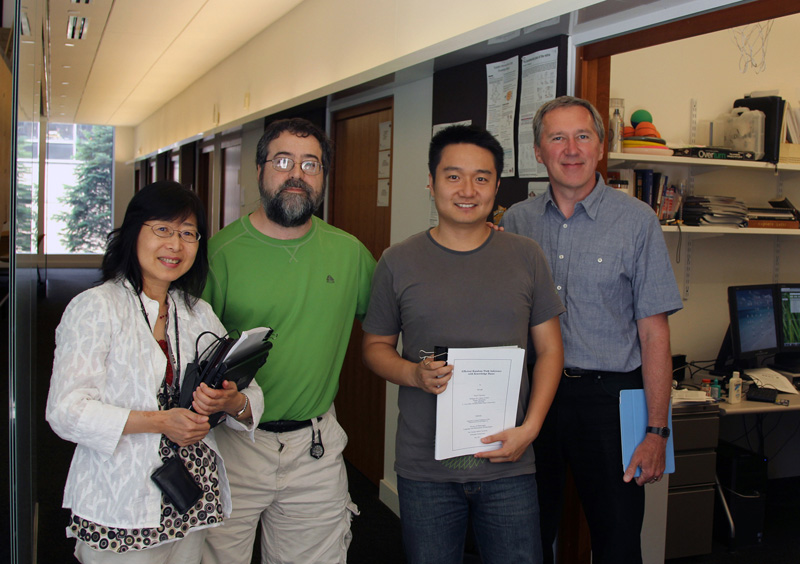

Ni Lao (劳逆)
I've graduated from Language Technologies Institute, School of Computer Science at Carnegie Mellon University. My theis advisor was professor William W. Cohen. I worked at Google for 5.5 years on language understanding and question answering. Now I work at SayMosaic as the chief scientist.
I work on machine learning, information retrieval, and natural language processing. Previously I have studied a wide range of topics such as robotic soccer, computer system diagnosis, product search, and question answering. Now I am interested in learning to control machines, and learning to create machines .
My CV, research statement, and thesis. My collection of interesting stuff
I TAed classes Machine Learning with Large Datasets, 2012 and Machine Learning, 2010.
Publications
My DBLP , Google Scholar , Twitter, LinkedIn, Medium, and Facebook.
Gengchen Mai, Krzysztof Janowicz and Cheng He, Sumang Liu, Ni Lao. POIReviewQA: A Semantically Enriched POI Retrieval and Question Answering Dataset. , In 12th Workshop on Geographic Information Retrieval (GIR 2018)
Chen Liang, Mohammad Norouzi, Jonathan Berant, Quoc Le, Ni Lao, Memory Augmented Policy Optimization for Program Synthesis with Generalization , In NIPS 2018
Juanzi Li, Ming Zhou, Guilin Qi, Ni Lao, Tong Ruan, Jianfeng Du, Knowledge Graph and Semantic Computing. Language, Knowledge, and Intelligence, Communications in Computer and Information Science, Springer, 2017
Fan Yang, Jiazhong Nie, William W. Cohen, Ni Lao, Learning to Organize Knowledge with N-Gram Machines , ICLR 2018 Workshop. poster AKBC best poster award,
Chen Liang, Jonathan Berant, Quoc Le, Kenneth D. Forbus, Ni Lao, Neural Symbolic Machines: Learning Semantic Parsers on Freebase with Weak Supervision , ACL 2017. poster slides slides
Ni Lao, Einat Minkov and William Cohen, Learning relational features with backward random walks , ACL 2015. poster
William Yang Wang, Kathryn Mazaitis, Ni Lao, Tom M. Mitchell, William W. Cohen, Efficient Inference and Learning in a Large Knowledge Base: Reasoning with Extracted Information using a Locally Groundable First-Order Probabilistic Logic, Machine Learning Journal (MLJ 2015), Springer.
T. Mitchell, W. Cohen, E. Hruscha, P. Talukdar, J. Betteridge, A. Carlson, B. Dalvi, M. Gardner,B. Kisiel,J. Krishnamurthy, N. Lao, K. Mazaitis, T. Mohammad, N. Nakashole, E. Platanios,A. Ritter, M. Samadi, B. Settles, R.Wang, D.Wijaya, A. Gupta, X. Chen, A. Saparov, M. Greaves, J.Welling (2015): Never-Ending Learning in AAAI-2015.
Ni Lao, Jun Zhu: Contrastive Feature Induction for Efficient Structure Learning of Conditional Random Fields. CoRR abs/1406.7445 (2014) code
Xin Luna Dong, Evgeniy Gabrilovich, Geremy Heitz, Wilko Horn, Ni Lao, Kevin Murphyy, Thomas Strohmann, Shaohua Sun, Wei Zhang Knowledge Vault: A Web-Scale Approach to Probabilistic Knowledge Fusion. KDD, 2014
Kevyn B Collins-thompson, Ni Lao, Context-Aware Query Alteration, US Patent 20120233140, 2012
Ni Lao, Amarnag Subramanya, Fernando Pereira, William W. Cohen Reading The Web with Learned Syntactic-Semantic Inference Rules. EMNLP, 2012
Ni Lao, William W. Cohen, Personalized Reading Recommendations for Saccharomyces Genome Database. DILS, 2012 poster
Ni Lao, Tom Mitchell, William W. Cohen, Random Walk Inference and Learning in A Large Scale Knowledge Base. EMNLP, 2011 slides poster AMT labels of 16 relations Distant Supervision labels of 96 relations
Jun Zhu, Ni Lao, Ning Chen, Eric P. Xing Conditional Topical Coding: an Efficient Topic Model Conditioned on Rich Features. KDD, 2011
Ni Lao, William W. Cohen, Relational retrieval using a combination of path-constrained random walks Machine Learning, 2010, Volume 81, Number 1, Pages 53-67 (ECML, 2010 slides poster )
Ni Lao, Jun Zhu, Liu Liu, Yandong Liu, William W. Cohen, Efficient Relational Learning with Hidden Variable Detection. NIPS, 2010 poster
Ni Lao, William W. Cohen, Fast Query Execution for Retrieval Models based on Path Constrained Random Walks. KDD, 2010
Jun Zhu, Ni Lao, E. P. Xing, Grafting-Light: Fast, Incremental Feature Selection and Structure Learning of Markov Random Fields. KDD, 2010
Lao, Ni, Hideki Shima, Teruko Mitamura and Eric Nyberg. 2008. Query Expansion and Machine Translation for Robust Cross-Lingual Information Retrieval , in Proceedings of NTCIR-7 Workshop, Japan.
Shima, Hideki, Ni Lao, Eric Nyberg and Teruko Mitamura. 2008. Complex Cross-lingual Question Answering as Sequential Classification and Multi-Document Summarization Task , in Proceedings of NTCIR-7 Workshop, Japan.
W. Zuo, N. Lao, Y. Geng, and K. Ma. 2008. GeoSVM: an efficient and effective tool to predict species' potential distributions. Journal of Plant Ecology, 1(2): 143-145.
Yiming Yang,Abhimanyu Lad, Ni Lao, Abhay Harpale, Bryan Kisiel, Monica Rogati, Utility-based information distillation over temporally sequenced documents, SIGIR, pp. 31-38, 2007.
Chun Yuan; Ni Lao; Ji-Rong Wen; Jiwei Li; Zheng Zhang; Yi-Min Wang; Wei-Ying Ma, Automated Known Problem Diagnosis with Event Traces, EuroSys, 2006.
Ni Lao, Ji-Rong Wen, Wei-Ying Ma, Yi-Min Wang, Combine High Level Symptom and Low Level State Information for Configuration Fault Diagnosis, LISA, 2004.
Ji-Rong Wen, Ni Lao, Wei-Ying Ma, Probabilistic Model for Contextual Retrieval, SIGIR, 2004.
Archana Ganapathi, Yi-Min Wang, Ni Lao, Ji-Rong Wen, Why PCs Are Fragile and What We Can Do About It: A Study of Windows Registry Problems, Dependable System and Network (DSN), 2004.
Jinyi Yao, Lao Ni, Fan Yang, Yunpeng Cai, Zengqi Sun, Technical Solutions of TsinghuAeolus for Robotic Soccer. Robocup 2003: 205-213,RoboCup, pp. 205-213, 2003
Unpublished Manuscript and Presentations
(with a few interesting ideas which I wish I have time to pursuit)Ni Lao, Neural Symbolic Language Understanding . 2017.
Ni Lao, Text Generation Survey . 2017.
Ni Lao, Xipeng Qiu, Knowledge Acquisition . 2017.
Ni Lao, NIPS 2016 Overview . 2016.
Ni Lao, Neural Symbolic Machines . 2016.
Ni Lao, New Development in Knowledge Acquisition, Inference, and Applications . 2015. (This is a lecture at CCF ADL65. I added my take on the relationship between connectionism and symbolism, which seems to be an important issue at the moment.)
Ni Lao, Elephant and AI . LTI Colloquium Report, Spring 2012.
Ni Lao, Programming by Demonstrations and Verbal Commands. LTI Colloquium Report, Spring 2012
Ni Lao, Beyond Shallow Semantics. LTI Colloquium Report, Fall 2011.
Ni Lao, CCG, Fractal, and Emergence. LTI Colloquium Report, Spring 2011.
Ni Lao, Reinforcement Learning In An Unknown Domain (slides). 2011.
Ni Lao, Probablistic Ontology Model. LTI Colloquium Report Fall 2010.
Ni Lao, Split-Emit Process for Natural Language Generation. Advanced NLP seminar 2009.
Ni Lao, Jun Zhu, Contrastive Feature Induction for Efficient Structure Learning of Conditional Random Fields . 2009.
Ni Lao, T. Mitamura, E. Nyberg, Tree Representations for Chinese Semantic Role Labeling. 2009.
Ni Lao, Read The Web (slides). Advanced IR seminar 2007.
Ni Lao, Schema Extraction Model . Advanced IR seminar 2007.
Ni Lao, Knowledge Acquisition From Text--A Survey Statistical NLP class 2007.
Thesis
PhD thesis, 2012. Efficient Random Walk Inference with Knowledge Bases (slides). Carnegie Mellon University
Master thesis, 2006. Data Mining Problems in Automatic Computer Diagnosis. Tsinghua University
Bachelor thesis, 2003. Mining Spatial-Temporal Data Using Constructive Induction. Tsinghua University
Code
2012, Path Ranking Algorithm A system for relational retrieval on heterogamous graphs ( github )
2006, geoSVM A predictive system for modeling species potential distributions based on SVM. See details at Wenyun's page
Data Sets
2012, NELL v165 NELL Knowledge graph in both triple format and PRA format
2010, yeast2 updated yeast data with extra information about Mesh heading, chemicals and affiliations etc. (321K entities and 6.1M links)
2010, fly a biological literature graph with 770K entities and 3.5M links
2010, yeast a biological literature graph with 164K entities and 2.8M links
Reviewer Services
2018: NAACL, COLING, SIGIR, ACL, CCKS, NLPCC, NIPS, EMNLP
2017: ACL, SIGIR, IJCAI, EMNLP, CCKS, IJCNLP, WSDM, TKDE, GRA
2016: IJCAI, NAACL, CIKM, COLING, WWW, TKDE, GRA
2015: IJCAI, CIKM, NIPS, MLJ, ICML, TKDE
2014: KDD, CIKM
2013: CIKM
2012: KDD, Neurocomputing J., SIGIR, JCST, TKDD, PKDD
2011: NIPS, T. Fuzzy Systems
2010: CIKM